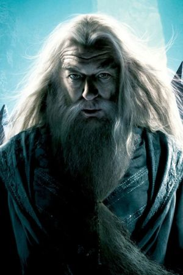
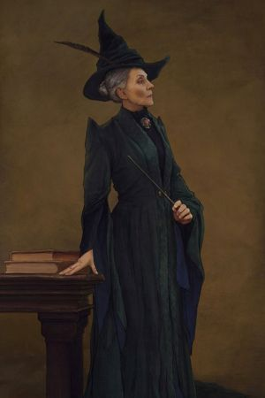
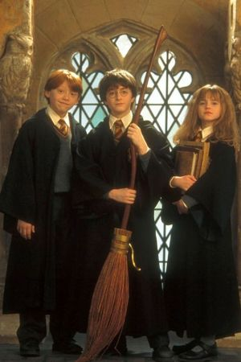

Conheça a casa Grifinória
Fundador
Godric Gryffindor: Ele foi um dos quatro fundadores de Hogwarts e é famoso por sua coragem e habilidade no combate. Gryffindor acreditava que aqueles que possuíam coragem e um forte senso de justiça eram os mais dignos de entrar em sua casa. Ele também é conhecido por seu famoso chapéu, que se tornou o Chapéu Seletor de Hogwarts.
Símbolos
Leão
Cores Vermelho e Dourado
Localização
Sala Comunal: A sala comunal da Grifinória fica na torre oeste de Hogwarts. A entrada é guardada por um retrato da Mulher Gorda, que só permite a entrada quando é dada a senha correta.
Qualidades Valorizadas
- Coragem: A característica mais importante. Alunos da Grifinória são conhecidos por sua disposição para enfrentar perigos e desafios.
- Determinação: Grifinórios são persistentes e não desistem facilmente, mesmo quando as coisas ficam difíceis.
- Bravura: Não é apenas a coragem física, mas também a coragem moral de fazer o que é certo, mesmo quando é difícil ou impopular.
Membros Notáveis
- 
- 
- 
Traços Característicos
Grifinórios são frequentemente descritos como ousados, impulsivos e prontos para a ação. Eles têm um forte senso de justiça e não hesitam em lutar pelo que acreditam ser certo. Apesar disso, podem ser vistos como imprudentes ou temerários por outras casas, especialmente Sonserina, com a qual Grifinória tem uma rivalidade histórica.
Cultura e espírito da casa
A Grifinória é conhecida por seu espírito de camaradagem e lealdade. Os alunos da casa tendem a formar laços fortes uns com os outros e estão sempre prontos para ajudar seus colegas em momentos de necessidade. O lema implícito da Grifinória poderia ser "Nunca desista e nunca se renda".
A Grifinória, portanto, representa o ideal de enfrentar o medo de frente, agindo com coragem e integridade. Os grifinórios são celebrados por suas ações heroicas e por sua disposição em arriscar tudo para defender os inocentes e combater as injustiças.